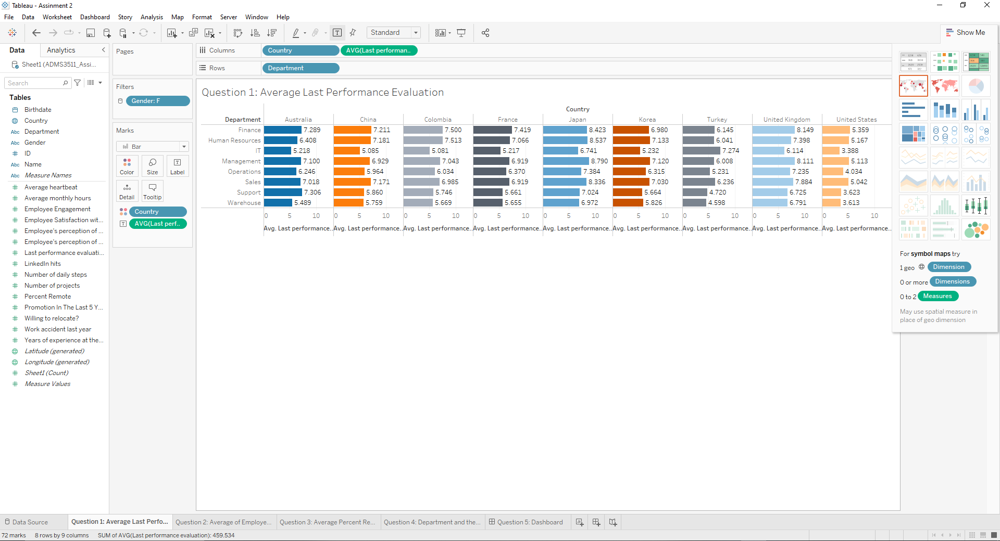
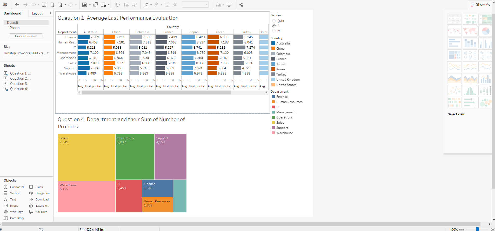

Project Details
(Employee Performance Analysis)
About Dataset:
This project was a part of ADMS 3511 Business Analytics course at York University. The dataset contains all employee data retrieved from HR department, which includes name, personal information, employees' perception of collaboration and competition in the organization's culture, years of experience, last performance evaluation, number of projects, number of working hours, employee satisfaction, work accidents. The data is openly available on Google Drive: https://drive.google.com/drive/u/3/folders/1qsbVvjGFbThqQazKx1MK3wIB6Z7LveXh" or it can be downloaded through the link below.
Descriptions of the variables in the data set

What are the tasks given?
XYZ is a multinational corporation with more than 14,850 employees. XYZ has
decided to analyze its human resources (HR) data looking for useful insight. The attached data set includes HR
data for all XYZ employees. You can find a table that includes descriptions of the variables in the data set at
the end of this file.
Use Tableau Desktop to create the charts and the dashboard asked in the following questions. Subsequently write
a managerial report to discuss your findings from the charts.
1. Create a bar chart to show average “Last performance evaluation” for employees in different departments and
different countries. Bars for different countries should have different colors. Add single view (i.e., radio
button) filters for gender.
(Hint: Use Department as rows. Use Country and Last performance evaluation as columns).
2. Create a clustered column chart that depicts the average of “Employee's perception of competition in the
organization’s culture” and the average of “Employee's perception of collaboration in the organization’s
culture” for employees in different departments. Make sure to use different colors for “Employee's perception of
competition in the organization’s culture” and “Employee's perception of collaboration in the organization’s
culture”.
(Hint: use Department as columns)
3. Create a GIS that shows the average “Percent remote” and average “Employee’s satisfaction with working
remote” for different countries as labels. Also, countries with different levels of average “percent remote”
should have different colors.
4. Create a treemap that separates the employees into their “Departments” and uses size to represent each
department’s sum of “Number of projects”. Use both “Department” and sum of “Number of projects” as labels.
5. Create a dashboard of the charts made for questions 1 and 4 above. Make sure that the entire dashboard (i.e.,
both charts) can be filtered based on Gender simultaneously (i.e., with one filter).
Reference Resources:
Let's Solve This Project!
After inserting Excel data into Tableau:

Task 1:
A bar chart with bars for different countries in different colors, and single view filters for gender to show average “Last performance evaluation” for employees in different departments and different countries.
Task 2:
A clustered column chart with different colors for “Employee's perception of competition in the organization’s culture” and “Employee's perception of collaboration in the organization’s culture” to depict the average of “Employee's perception of competition in the organization’s culture” and the average of “Employee's perception of collaboration in the organization’s culture” for employees in different departments.

Task 3:
A GIS with countries with different levels of average “percent remote” in different colors to show the average “Percent remote” and average “Employee’s satisfaction with working remote” for different countries as labels.

Task 4:
A treemap to separate the employees into their “Departments” and uses size to represent each department’s sum of “Number of projects”.

Task 5:
A dashboard of the charts made for request 1 and 4 above with a filter based on Gender simultaneously.
Conclusion:
These charts and dashboards give an insight into Human Resources of XYZ in
different deparments
in different
countries. It can be seen that UK, Australia, Japan have both very high
Percent Remote and high Satisfaction with Working Remote while the lowest ones are China, US
and Columbia.
For these leading countries, as the rating of Employee Satisfaciton with Working
Remote increase, employees are willing to have more their work done remotely. For USA, not
only the rating of Satisfaciton with Working Remote is lowest, but the average Performance
Evaluation is also lower compared to other countries. Except for Finance, Human Resources,
Management and Sales departments, the average Performance Evaluation in other departments in
US are rated below 5 on a 10-point scale, which requires XYZ to enhance all employees’
performance in USA.
In terms of Performance appraisal, a common pattern shared by all
countries is that Finance accounts for the highest rating, then the second position belong to Management, Sales
and HR
and the lowest is IT, which will need more improvement in this department. Support and Warehouse have
similarities in
Performance evaluation and Number of Projects. Sales has the most projects and the least is
Management, which might be related to the nature and function of Sales department in an
organization.
Regarding to Projects and Performance by Gender, Number of Projects of women
in all departments are always higher than that of men. Although more works are assigned to
women, average Performance evaluation of men in major departments : Sales, and Management,
is rated higher than that of women. IT and Operations both have highest average of Perception of
collaboration level and a lower average of Perception of competition level. Support has low
Perception of the Collaboration level but obtains the highest Perception of the competition level.
Overall, except for Warehouse and HR, the average Perception of the level of collaboration is
inversely proportional to the average Employees’s Perception of Competition level in
organization’s culture. It’s suggested to to balance these levels for best organization’s culture.
Nhi Nguyen


Copyright © 2022. All Rights Reserved